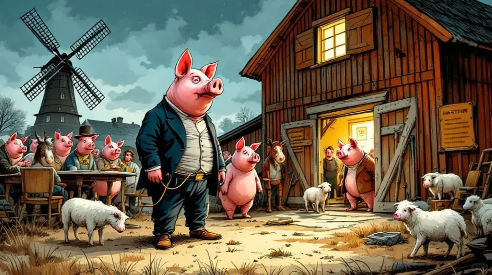

《动物农场》解说（2）
今天分享第一章，不过准备要分三次，每次内容短些，容易读。
首先介绍一下第一章出场的人物（动物）。第一章并未出场真正的主角，但是也都是必不可少人物（动物）。按照顺序，第一位出场的是人，此后出场的就都是动物了，小说只有到结尾部分才又有了人类的出现，那是后话。
这第一位出场的人类角色是农场主Jones先生。既然是动物农场，就免不了以饲养鸡鸭猪狗牛马羊为生，既然饲养它们，就不免要“榨取”它们的劳动果实，这就为后文第二章里动物们起来造反埋下了伏笔。上一次讲过农场主Jones先生就是被影射为沙皇尼古拉二世，1917年俄国的“二月革命”正是推翻了这个末代王朝（罗曼诺夫王朝）。关于对末代沙皇一家最后的结局，还有一些未了的公案，在这次俄乌战争中又有人翻出了这段历史。总之，在这个农场中，第二章，动物们起来赶走了Jones先生一家。
第一段Jones先生的出场，短短的一段文字就有两处写到他是醉酒的状态并且上床睡觉前还是要再喝一大杯啤酒，也许这并不是简单的人物刻划。传说俄罗斯人嗜酒成性，有人说是俄国人总是追求激情、豪爽到极致，但是这也许正是源于前现代社会民族理性的不足，正是这种理性的不足，才更容易受到激情演说或某种洗脑式宣传的影响，也许更能适应某种极权体制下的治理方式。
第二段，第一个出场的动物，是一头德高望重的老公猪Old Major. 这个角色对全书都非常重要，虽然它在第二章开篇就寿终正寝了，但正是他的梦想和演讲鼓动了动物们的造反行动。关于它是影射的哪个真实人物，是略有些争议的，一说是影射马克思和恩格斯，也有一说是影射列宁。因为故事主体场景的设定是俄国，那么说是影射列宁的说法占了上风。不过我个人更偏向于影射的是马克思（至少是马列的混合体），因为马克思创立了共产主义理论，却在任何一个共产主义国家建立前便已逝世，更符合书中设定的时间线—Old Major在第二章便安详离世了。关于Major这个名字的中译，很多中译本都意译为“老少校”，这大体是没有问题的。其实英国有位前首相，就是撒切尔夫人的继任者，名字叫John Major，我们的中文媒体中都是译为“梅杰”的，我觉得这个译名就不错。不过我看到有一个译本采用音译方式，译为“老麦哲”，结果却颇有意味。是不是干脆更直白地译为“老马哲”更加音意兼备呢？不过，只要不译成“老没辙”就好。
说回故事情节，由于Old Major前一天晚上做了一个奇怪的梦要传达给动物们，所以才有了在农场主入睡后，动物们开始了一场聚会，听听Old Major的演讲。这段情节背后寓意是，俄国的革命不是一朝一夕突然发生的。它有着几十年的萌动期，有过西化派、斯拉夫派、民粹主义等多种思潮的激荡。但真正给革命提供思想基础的是马克思（列宁）主义。
第三段，描述Old Major的外貌是仪表堂堂，尽管其獠牙从未修剪过但仍然面带智慧与慈祥。也许是提醒读者不要忘记，它虽然面带智慧与慈祥，但毕竟是有獠牙的。
接下来第四段，是其他动物们陆续出场了。三条有名字的狗，一些没给出名字的猪，鸡、鸽子、羊、牛、马、驴。这里值得一提的是一匹有名字的马Boxer和一头有名字的驴Benjamin。
Boxer是一头高大健壮的公马，性情善良且意志坚定，但头脑并不聪慧。它是动物们革命后提出的“动物主义”理念的忠实追随者，为了农场的发展拼尽全力工作。他惊人的力气，对整个农场而言都是一笔巨大的财富。鲍克瑟坚信并积极积极响应革命领袖的号召，甚至到了愚忠的程度，相信拿破仑永远是正确的。但是后来年老体衰并且为保卫农场负伤后，却被本书真正的主角（第二章才出场的）拿破仑卖给了屠宰场，并用换来的钱买了威士忌。这一角色一说是象征那些相信“革命理论”的的勤劳善良但头脑简单的广大群众，在拿破仑及其他猪领导眼中，他们的价值几乎只体现在劳动上。当然也有一说是影射捷尔任斯基等革命圣徒。捷尔任斯基无论是别人评价还是自我评价都是干劲十足但头脑简单的实干家，不是领袖型的人物。从作者给他的名字中是不是可以看出点什么？有中译本意译为“拳师”，还行吧。
倔驴Benjamin在后文中则对拿破仑的所作所为始终抱有怀疑的态度，甚至是保持着超前的清醒态度，但是它又非常明哲保身。象征那些能独立思考，对极权主义有所怀疑但明哲保身的知识分子。在这一段介绍它时就说它平时不爱说话，一说话就有点愤世嫉俗的感觉（你也可以译成阴阳怪气）（有点像我自己，不过我这么说实在有恬不知耻，这是抬高了自己，因为乔治·奥威尔曾宣称本杰明是影射自己）。比方说，它会说“上帝给了我尾巴是让我赶走苍蝇，但我宁愿既没有苍蝇也没有尾巴”。
下一段，在一群小鸭子进来并依偎在母马Clover的腿弯里入睡后，进来了漂亮且无脑的母马Mollie，它是给农场主Jones先生拉车的漂亮白马，就是那种特别愿意靠华丽的装饰打扮吸引人注意的那种人（动物），它一般都找显眼的地方出现。象征爱慕虚荣、爱享受，好吃懒做的小资产阶级（小市民）。最后进来的是一只猫，可是这只猫只是咕噜咕噜地似睡非睡着，它根本就打算听进去演讲内容。
最后，所有动物都到齐了（除了一只名叫Moses的乌鸦），大家准备听Old Major的梦想演说了。老麦哲讲了些什么？且听下回分解。
